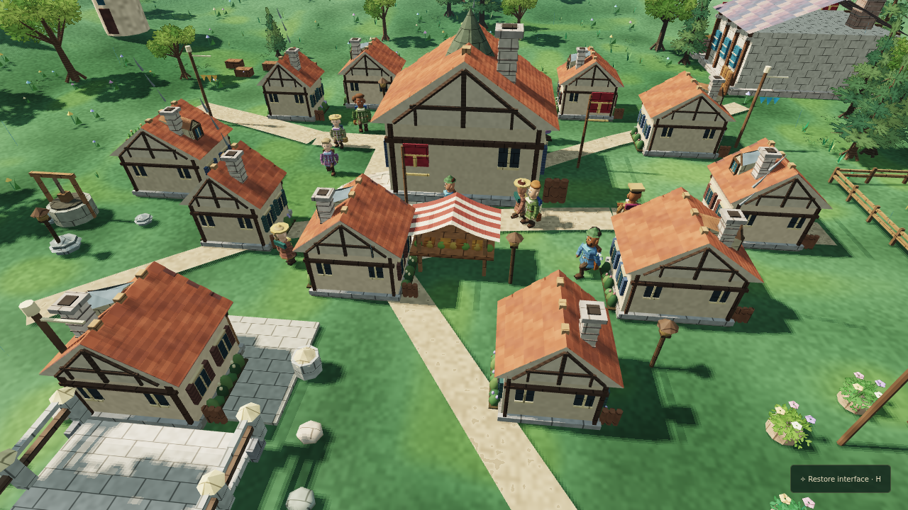
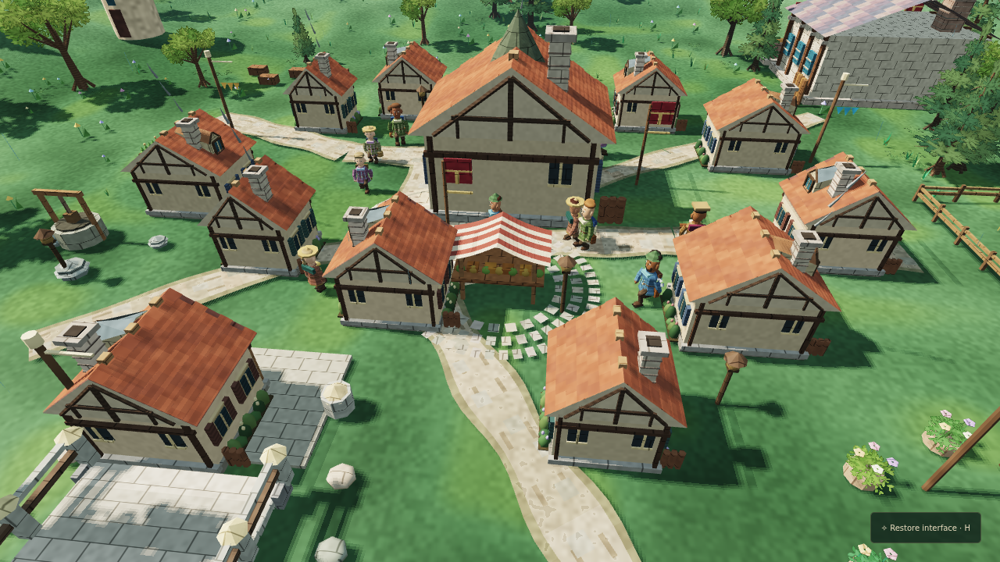

GAME 5 · GAUNTLET 038 · TIMESTAMPED BUILD JOURNAL
Roads and shadows that respect the world.
Pagonia benchmark: NOT PASSEDPlay Tiny Kingdom · Previous living-district review · Fixed visual benchmark
These are actual browser-rendered screenshots at matched camera and simulated noon, not generated concept art. This round improves the existing world; it does not claim realistic AAA characters, a blind commercial reference victory, or independent fresh-context review.
Village market — matched before and after


Renderer: audited shadow budgets
HD retains a 2048-pixel sun depth map; Balanced uses 1024, Performance uses 512. An isolated presentation clock limits unnecessary shadow updates, while changes to the static village trigger an immediate refresh. Citizens' simulation and saves never depend on display timing. Road surfaces are cosmetic only and do not move houses, paths, citizens or resources.
| Measured at 1280 × 720 Balanced on software WebGL | Before | Candidate |
|---|---|---|
| Median wall frame (ms) | Awaiting evidence | Awaiting evidence |
| Depth-map refreshes in captured sample | Awaiting evidence | Awaiting evidence |
| Depth texture size | Awaiting evidence | Awaiting evidence |
The software GPU is not hardware-GPU evidence. Frame time includes browser/host variance and cannot certify 30 or 60 fps. The independent reference-comparison and long-running performance gates remain open.
No verification manifest loaded yet.
Unmet quality bar
Still requires high-fidelity authored characters, animated delivery chains, richer architecture and vegetation, improved riverbanks, a stronger economy-in-action, GPU profiling on real devices, independent reference critics, and a blind side-by-side win. Keep this branch in draft until those gates are demonstrated.